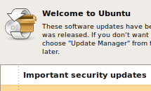
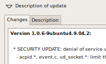

Never have to worry about using out-dated software again, Ubuntu keeps on top of that for you.
Updates are automatically downloaded by the Update Manager as soon as they are available and they can be installed with only a few clicks.
In addition to that, we release a new version of Ubuntu every six months with fresh new features and software choices for you to enjoy.

